RabbitMQ
RabbitMQ
1. 初识 MQ
1.1. 同步和异步通讯
微服务间通讯有同步和异步两种方式：
同步通讯：就像打电话，需要实时响应。
异步通讯：就像发邮件，不需要马上回复。
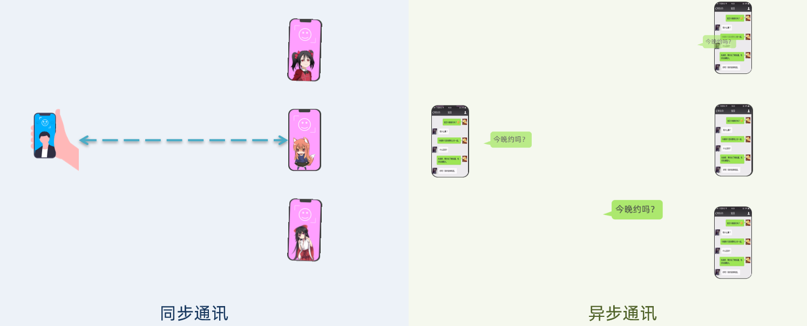
两种方式各有优劣，打电话可以立即得到响应，但是你却不能跟多个人同时通话。发送邮件可以同时与多个人收发邮件，但是往往响应会有延迟。
1.1.1. 同步通讯
我们之前学习的 Feign 调用就属于同步方式，虽然调用可以实时得到结果，但存在下面的问题：
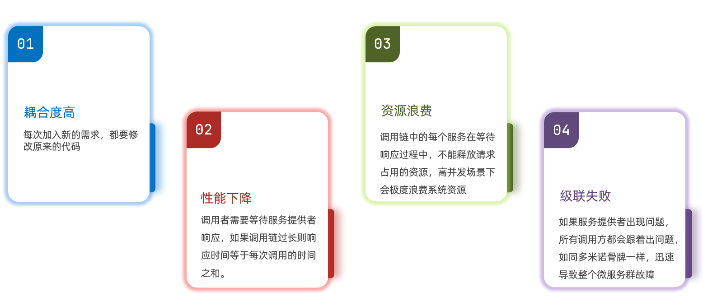
总结：
同步调用的优点：
- 时效性较强，可以立即得到结果
同步调用的问题：
- 耦合度高
- 性能和吞吐能力下降
- 有额外的资源消耗
- 有级联失败问题
1.1.2. 异步通讯
异步调用则可以避免上述问题：
我们以购买商品为例，用户支付后需要调用订单服务完成订单状态修改，调用物流服务，从仓库分配响应的库存并准备发货。
在事件模式中，支付服务是事件发布者（publisher），在支付完成后只需要发布一个支付成功的事件（event），事件中带上订单 id。
订单服务和物流服务是事件订阅者（Consumer），订阅支付成功的事件，监听到事件后完成自己业务即可。
为了解除事件发布者与订阅者之间的耦合，两者并不是直接通信，而是有一个中间人（Broker）。发布者发布事件到 Broker，不关心谁来订阅事件。订阅者从 Broker 订阅事件，不关心谁发来的消息。
Broker 是一个像数据总线一样的东西，所有的服务要接收数据和发送数据都发到这个总线上，这个总线就像协议一样，让服务间的通讯变得标准和可控。
好处：
-
吞吐量提升：无需等待订阅者处理完成，响应更快速
-
故障隔离：服务没有直接调用，不存在级联失败问题
-
调用间没有阻塞，不会造成无效的资源占用
-
耦合度极低，每个服务都可以灵活插拔，可替换
-
流量削峰：不管发布事件的流量波动多大，都由 Broker 接收，订阅者可以按照自己的速度去处理事件
缺点：
- 架构复杂了，业务没有明显的流程线，不好管理
- 需要依赖于 Broker 的可靠、安全、性能
好在现在开源软件或云平台上 Broker 的软件是非常成熟的，比较常见的一种就是我们今天要学习的 MQ 技术。
1.2. 技术对比：
MQ，中文是消息队列（MessageQueue），字面来看就是存放消息的队列。也就是事件驱动架构中的 Broker。
比较常见的 MQ 实现：
- ActiveMQ
- RabbitMQ
- RocketMQ
- Kafka
几种常见 MQ 的对比：
| RabbitMQ | ActiveMQ | RocketMQ | Kafka | |
|---|---|---|---|---|
| 公司 / 社区 | Rabbit | Apache | 阿里 | Apache |
| 开发语言 | Erlang | Java | Java | Scala&Java |
| 协议支持 | AMQP，XMPP，SMTP，STOMP | OpenWire,STOMP，REST,XMPP,AMQP | 自定义协议 | 自定义协议 |
| 可用性 | 高 | 一般 | 高 | 高 |
| 单机吞吐量 | 一般 | 差 | 高 | 非常高 |
| 消息延迟 | 微秒级 | 毫秒级 | 毫秒级 | 毫秒以内 |
| 消息可靠性 | 高 | 一般 | 高 | 一般 |
追求可用性：Kafka、 RocketMQ 、RabbitMQ
追求可靠性：RabbitMQ、RocketMQ
追求吞吐能力：RocketMQ、Kafka
追求消息低延迟：RabbitMQ、Kafka
2. 快速入门
2.1. 安装 RabbitMQ
安装 RabbitMQ，参考课前资料：
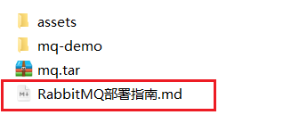
MQ 的基本结构：
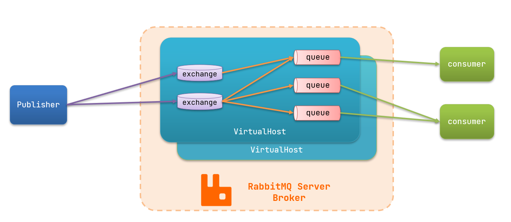
RabbitMQ 中的一些角色：
- publisher：生产者
- consumer：消费者
- exchange 个：交换机，负责消息路由
- queue：队列，存储消息
- virtualHost：虚拟主机，隔离不同租户的 exchange、queue、消息的隔离
2.2.RabbitMQ 消息模型
RabbitMQ 官方提供了 5 个不同的 Demo 示例，对应了不同的消息模型：
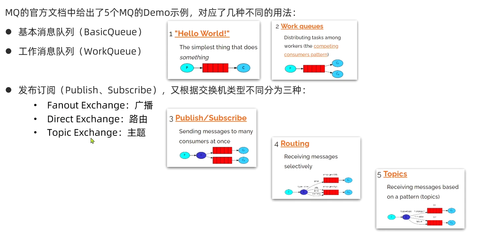
2.3. 导入 Demo 工程
课前资料提供了一个 Demo 工程，mq-demo:
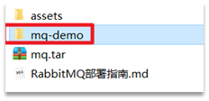
导入后可以看到结构如下：
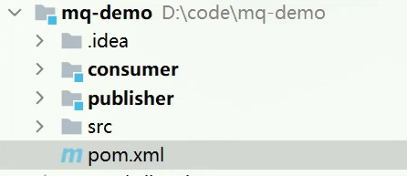
包括三部分：
- mq-demo：父工程，管理项目依赖
- publisher：消息的发送者
- consumer：消息的消费者
2.4. 入门案例
简单队列模式的模型图：
官方的 HelloWorld 是基于最基础的消息队列模型来实现的，只包括三个角色：
- publisher：消息发布者，将消息发送到队列 queue
- queue：消息队列，负责接受并缓存消息
- consumer：订阅队列，处理队列中的消息
2.4.1.publisher 实现
思路：
- 建立连接
- 创建 Channel
- 声明队列
- 发送消息
- 关闭连接和 channel
代码实现：
1 | package cn.itcast.mq.helloworld; |
2.4.2.consumer 实现
代码思路：
- 建立连接
- 创建 Channel
- 声明队列
- 订阅消息
代码实现：
1 | package cn.itcast.mq.helloworld; |
2.5. 总结
基本消息队列的消息发送流程：
-
建立 connection
-
创建 channel
-
利用 channel 声明队列
-
利用 channel 向队列发送消息
基本消息队列的消息接收流程：
-
建立 connection
-
创建 channel
-
利用 channel 声明队列
-
定义 consumer 的消费行为 handleDelivery ()
-
利用 channel 将消费者与队列绑定
3.SpringAMQP
SpringAMQP 是基于 RabbitMQ 封装的一套模板，并且还利用 SpringBoot 对其实现了自动装配，使用起来非常方便。
SpringAmqp 的官方地址：https://spring.io/projects/spring-amqp
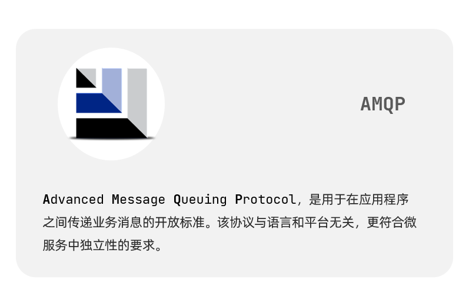
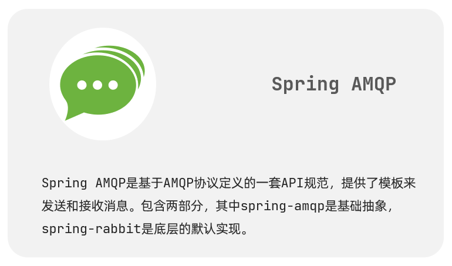
SpringAMQP 提供了三个功能：
- 自动声明队列、交换机及其绑定关系
- 基于注解的监听器模式，异步接收消息
- 封装了 RabbitTemplate 工具，用于发送消息
3.1.Basic Queue 简单队列模型
在父工程 mq-demo 中引入依赖
1 | <!--AMQP依赖，包含RabbitMQ--> |
3.1.1. 消息发送
首先配置 MQ 地址，在 publisher 服务的 application.yml 中添加配置：
1 | spring: |
然后在 publisher 服务中编写测试类 SpringAmqpTest，并利用 RabbitTemplate 实现消息发送：
1 | package cn.itcast.mq.spring; |
3.1.2. 消息接收
首先配置 MQ 地址，在 consumer 服务的 application.yml 中添加配置：
1 | spring: |
然后在 consumer 服务的 cn.itcast.mq.listener 包中新建一个类 SpringRabbitListener，代码如下：
1 | package cn.itcast.mq.listener; |
3.1.3. 测试
启动 consumer 服务，然后在 publisher 服务中运行测试代码，发送 MQ 消息
3.2.WorkQueue
Work queues，也被称为（Task queues），任务模型。简单来说就是让多个消费者绑定到一个队列，共同消费队列中的消息。
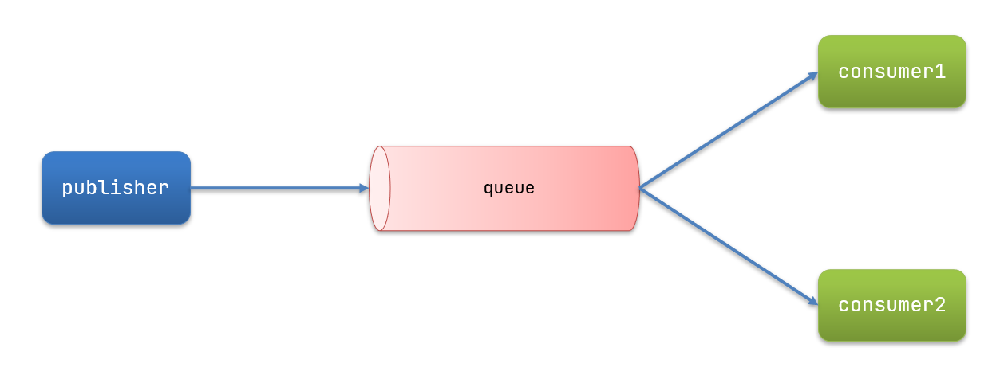
当消息处理比较耗时的时候，可能生产消息的速度会远远大于消息的消费速度。长此以往，消息就会堆积越来越多，无法及时处理。
此时就可以使用 work 模型，多个消费者共同处理消息处理，速度就能大大提高了。
3.2.1. 消息发送
这次我们循环发送，模拟大量消息堆积现象。
在 publisher 服务中的 SpringAmqpTest 类中添加一个测试方法：
1 | /** |
3.2.2. 消息接收
要模拟多个消费者绑定同一个队列，我们在 consumer 服务的 SpringRabbitListener 中添加 2 个新的方法：
1 |
|
注意到这个消费者 sleep 了 1000 秒，模拟任务耗时。
3.2.3. 测试
启动 ConsumerApplication 后，在执行 publisher 服务中刚刚编写的发送测试方法 testWorkQueue。
可以看到消费者 1 很快完成了自己的 25 条消息。消费者 2 却在缓慢的处理自己的 25 条消息。
也就是说消息是平均分配给每个消费者，并没有考虑到消费者的处理能力。这样显然是有问题的。
3.2.4. 能者多劳
在 spring 中有一个简单的配置，可以解决这个问题。我们修改 consumer 服务的 application.yml 文件，添加配置：
1 | spring: |
3.2.5. 总结
Work 模型的使用：
- 多个消费者绑定到一个队列，同一条消息只会被一个消费者处理
- 通过设置 prefetch 来控制消费者预取的消息数量
3.3. 发布 / 订阅
发布订阅的模型如图：
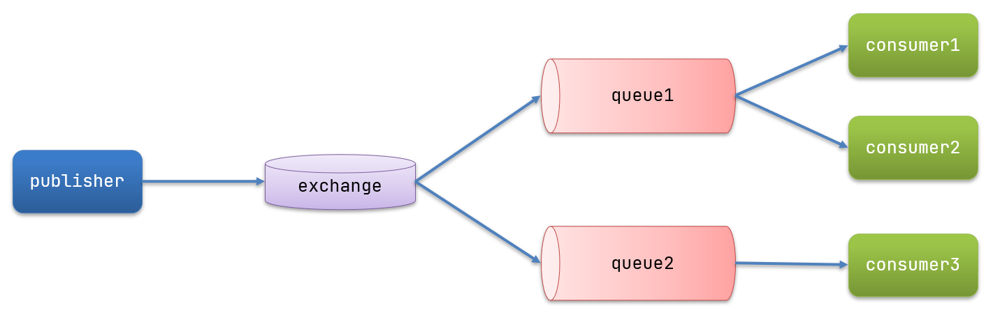
可以看到，在订阅模型中，多了一个 exchange 角色，而且过程略有变化：
- Publisher：生产者，也就是要发送消息的程序，但是不再发送到队列中，而是发给 X（交换机）
- Exchange：交换机，图中的 X。一方面，接收生产者发送的消息。另一方面，知道如何处理消息，例如递交给某个特别队列、递交给所有队列、或是将消息丢弃。到底如何操作，取决于 Exchange 的类型。Exchange 有以下 3 种类型：
- Fanout：广播，将消息交给所有绑定到交换机的队列
- Direct：定向，把消息交给符合指定 routing key 的队列
- Topic：通配符，把消息交给符合 routing pattern（路由模式） 的队列
- Consumer：消费者，与以前一样，订阅队列，没有变化
- Queue：消息队列也与以前一样，接收消息、缓存消息。
Exchange（交换机）只负责转发消息，不具备存储消息的能力，因此如果没有任何队列与 Exchange 绑定，或者没有符合路由规则的队列，那么消息会丢失！
3.4.Fanout
Fanout，英文翻译是扇出，我觉得在 MQ 中叫广播更合适。
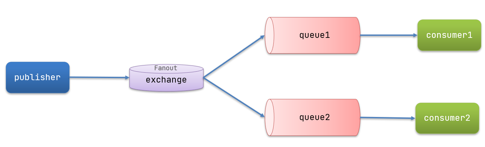
在广播模式下，消息发送流程是这样的：
- 1） 可以有多个队列
- 2） 每个队列都要绑定到 Exchange（交换机）
- 3） 生产者发送的消息，只能发送到交换机，交换机来决定要发给哪个队列，生产者无法决定
- 4） 交换机把消息发送给绑定过的所有队列
- 5） 订阅队列的消费者都能拿到消息
我们的计划是这样的：
- 创建一个交换机 itcast.fanout，类型是 Fanout
- 创建两个队列 fanout.queue1 和 fanout.queue2，绑定到交换机 itcast.fanout
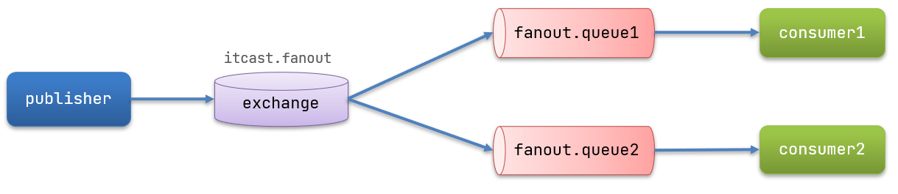
3.4.1. 声明队列和交换机
Spring 提供了一个接口 Exchange，来表示所有不同类型的交换机：
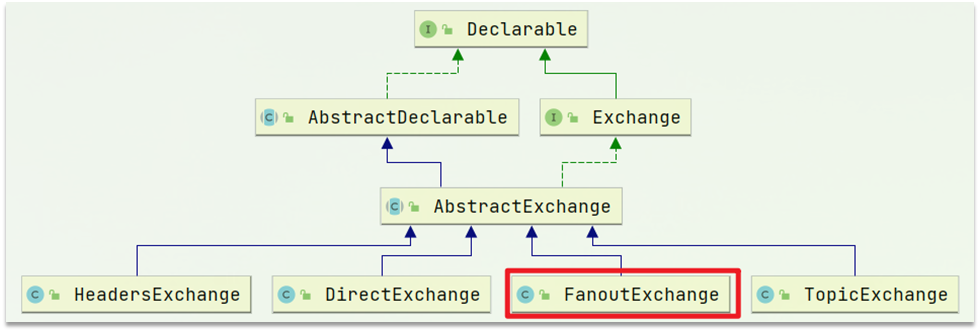
在 consumer 中创建一个类，声明队列和交换机：
1 | package cn.itcast.mq.config; |
3.4.2. 消息发送
在 publisher 服务的 SpringAmqpTest 类中添加测试方法：
1 |
|
3.4.3. 消息接收
在 consumer 服务的 SpringRabbitListener 中添加两个方法，作为消费者：
1 |
|
3.4.4. 总结
交换机的作用是什么？
- 接收 publisher 发送的消息
- 将消息按照规则路由到与之绑定的队列
- 不能缓存消息，路由失败，消息丢失
- FanoutExchange 的会将消息路由到每个绑定的队列
声明队列、交换机、绑定关系的 Bean 是什么？
- Queue
- FanoutExchange
- Binding
3.5.Direct
在 Fanout 模式中，一条消息，会被所有订阅的队列都消费。但是，在某些场景下，我们希望不同的消息被不同的队列消费。这时就要用到 Direct 类型的 Exchange。
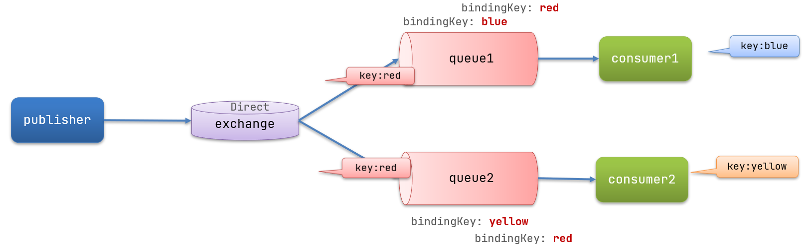
在 Direct 模型下：
- 队列与交换机的绑定，不能是任意绑定了，而是要指定一个
RoutingKey（路由 key） - 消息的发送方在 向 Exchange 发送消息时，也必须指定消息的
RoutingKey。 - Exchange 不再把消息交给每一个绑定的队列，而是根据消息的
Routing Key进行判断，只有队列的Routingkey与消息的Routing key完全一致，才会接收到消息
案例需求如下：
-
利用 @RabbitListener 声明 Exchange、Queue、RoutingKey
-
在 consumer 服务中，编写两个消费者方法，分别监听 direct.queue1 和 direct.queue2
-
在 publisher 中编写测试方法，向 itcast. direct 发送消息
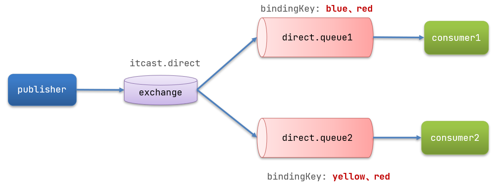
3.5.1. 基于注解声明队列和交换机
基于 @Bean 的方式声明队列和交换机比较麻烦，Spring 还提供了基于注解方式来声明。
在 consumer 的 SpringRabbitListener 中添加两个消费者，同时基于注解来声明队列和交换机：
1 |
|
3.5.2. 消息发送
在 publisher 服务的 SpringAmqpTest 类中添加测试方法：
1 |
|
3.5.3. 总结
描述下 Direct 交换机与 Fanout 交换机的差异？
- Fanout 交换机将消息路由给每一个与之绑定的队列
- Direct 交换机根据 RoutingKey 判断路由给哪个队列
- 如果多个队列具有相同的 RoutingKey，则与 Fanout 功能类似
基于 @RabbitListener 注解声明队列和交换机有哪些常见注解？
- @Queue
- @Exchange
3.6.Topic
3.6.1. 说明
Topic 类型的 Exchange 与 Direct 相比，都是可以根据 RoutingKey 把消息路由到不同的队列。只不过 Topic 类型 Exchange 可以让队列在绑定 Routing key 的时候使用通配符！
Routingkey 一般都是有一个或多个单词组成，多个单词之间以”.” 分割，例如： item.insert
通配符规则：
``：匹配一个或多个词
* ：匹配不多不少恰好 1 个词
举例：
item. ：能够匹配 item.spu.insert 或者 item.spu
item.* ：只能匹配 item.spu
图示：
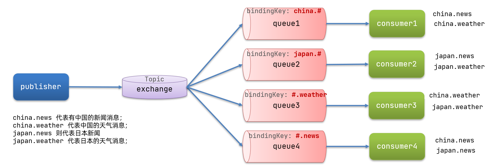
解释：
- Queue1：绑定的是
china.，因此凡是以china.开头的routing key都会被匹配到。包括 china.news 和 china.weather - Queue2：绑定的是
.news，因此凡是以.news结尾的routing key都会被匹配。包括 china.news 和 japan.news
案例需求：
实现思路如下：
-
并利用 @RabbitListener 声明 Exchange、Queue、RoutingKey
-
在 consumer 服务中，编写两个消费者方法，分别监听 topic.queue1 和 topic.queue2
-
在 publisher 中编写测试方法，向 itcast. topic 发送消息
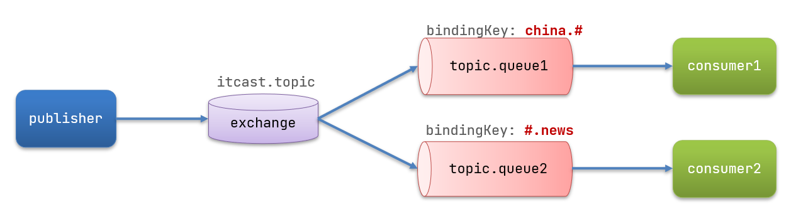
3.6.2. 消息发送
在 publisher 服务的 SpringAmqpTest 类中添加测试方法：
1 | /** |
3.6.3. 消息接收
在 consumer 服务的 SpringRabbitListener 中添加方法：
1 |
|
3.6.4. 总结
描述下 Direct 交换机与 Topic 交换机的差异？
- Topic 交换机接收的消息 RoutingKey 必须是多个单词，以
**.**分割 - Topic 交换机与队列绑定时的 bindingKey 可以指定通配符
- ``：代表 0 个或多个词
*：代表 1 个词
3.7. 消息转换器
之前说过，Spring 会把你发送的消息序列化为字节发送给 MQ，接收消息的时候，还会把字节反序列化为 Java 对象。
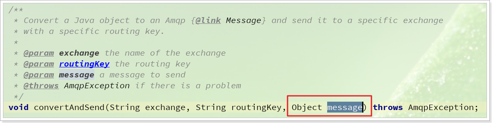
只不过，默认情况下 Spring 采用的序列化方式是 JDK 序列化。众所周知，JDK 序列化存在下列问题：
- 数据体积过大
- 有安全漏洞
- 可读性差
我们来测试一下。
3.7.1. 测试默认转换器
我们修改消息发送的代码，发送一个 Map 对象：
1 |
|
停止 consumer 服务
发送消息后查看控制台：
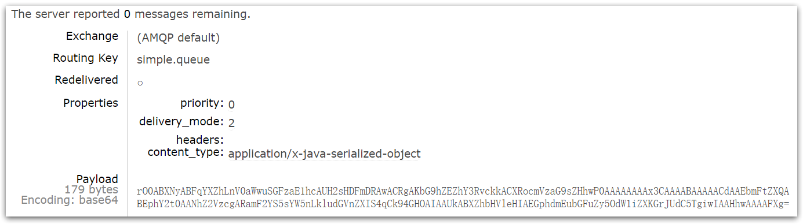
3.7.2. 配置 JSON 转换器
显然，JDK 序列化方式并不合适。我们希望消息体的体积更小、可读性更高，因此可以使用 JSON 方式来做序列化和反序列化。
在 publisher 和 consumer 两个服务中都引入依赖：
1 | <dependency> |
配置消息转换器。
在启动类中添加一个 Bean 即可：
1 |
|